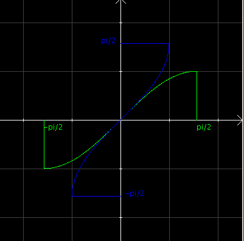
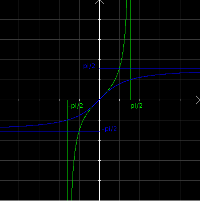
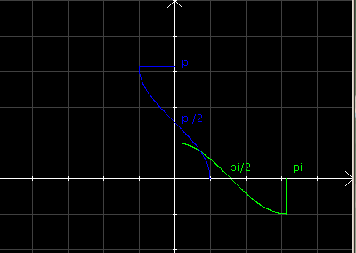

| Choisissez votre langue ! | Choose your language ! |
Nous introduisons maintenant les fonctions réciproques des fonctions trigonométriques. Elles sont particulièrement importantes, particulièrement en théorie de l'intégration pour le calcul de certaines primitives.
Il résulte donc des résultats de qu'elle possède une fonction réciproque également continue, monotone, strictement croissante de [-1,+1] sur [-π/2,+π/2].
La fonction Arcsin
La fonction sinus est continue, monotone, strictement croissante sur [-π/2,+π/2].Il résulte donc des résultats de qu'elle possède une fonction réciproque également continue, monotone, strictement croissante de [-1,+1] sur [-π/2,+π/2].
We now introduce the inverse functions of the trigonometric functions. They are particularly important, particularly in integration theory for the calculation of certain primitives.
It therefore follows from the results of that it has a similarly continuous inverse function , monotonic, strictly increasing from [-1,+1] to [-π/2,+π/2].
The arcsine function
The sine function is continuous, monotone, strictly increasing on [-π/2,+π/2].It therefore follows from the results of that it has a similarly continuous inverse function , monotonic, strictly increasing from [-1,+1] to [-π/2,+π/2].
définition 1
Cette fonction se note 'Arcsin' (ou 'arcsin' ou bien 'asin' ou parfois improprement sur les touches de calculatrices sin-1), et s'appelle
'Arcsinus'
.
definition 1
This function is written 'arcsin' ( or 'asin' or sometimes on calculator keys sin-1), and is called
'arcsine'
.
En vert la fonction sinus, en bleu sa réciproque.
Un green the sine function, in blue its inverse.

La formule sin(arcsin(x))=x est toujours vraie, mais la formule arcsin(sin(x))=x est en général fausse, on a simplement x≡arcsin(sin(x)) [2π].
Il résulte donc des résultats de qu'elle possède une fonction réciproque également continue, monotone, strictement croissante de [-∞,+∞] sur ]-π/2,+π/2[.
La fonction Arctan
La fonction tangente est continue, monotone, strictement croissante sur ]-π/2,+π/2[.Il résulte donc des résultats de qu'elle possède une fonction réciproque également continue, monotone, strictement croissante de [-∞,+∞] sur ]-π/2,+π/2[.
The formula sin(arcsin(x))=x is always true, but the formula arcsin(sin(x))=x is generally false, we simply have x≡arcsin(sin(x)) [2π].
It therefore follows from the results of that it has a similarly continuous inverse function , monotone, strictly increasing from [-∞,+∞] to ]-π/2,+π/2[.
The arctangent function
The tangent function is continuous, monotone, strictly increasing on ]-π/2,+π/2[.It therefore follows from the results of that it has a similarly continuous inverse function , monotone, strictly increasing from [-∞,+∞] to ]-π/2,+π/2[.
définition 2
Cette fonction se note 'Arctan' (ou 'arctan' ou bien 'atan' ou parfois improprement sur les touches de calculatrices tan-1), et s'appelle
'Arctangente'
.
definition 2
This function is written 'arctan' (or 'atan' or sometimes on calculator keys tan-1), and is called
'arctangent'
.
En vert la fonction tangente, en bleu sa réciproque.
In green the tangent function, in blue its inverse.

La formule tan(arctan(x))=x est toujours vraie, mais la formule arctan(tan(x))=x est en général fausse, on a simplement x≡arctan(tan(x)) [π].
Il résulte donc des résultats de qu'elle possède une fonction réciproque également continue, monotone, strictement décroissante de [-1,+1] sur [0,π].
La fonction Arccos
La fonction cosinus est continue, monotone, strictement décroissante sur [0,+π].Il résulte donc des résultats de qu'elle possède une fonction réciproque également continue, monotone, strictement décroissante de [-1,+1] sur [0,π].
The formula tan(arctan(x))=x is always true, but the formula arctan(tan(x))=x is generally false, we simply have x≡arctan(tan(x)) [π].
It therefore follows from the results of that it has a similarly continuous inverse function , monotone, strictly decreasing from [-1,+1] to [0,π].
The arccosine function
The cosine function is continuous, monotonic, strictly decreasing on [0,+π].It therefore follows from the results of that it has a similarly continuous inverse function , monotone, strictly decreasing from [-1,+1] to [0,π].
définition 3
Cette fonction se note 'Arccos' (ou 'arccos' ou bien 'acos' ou parfois improprement sur les touches de calculatrices cos-1), et s'appelle
'Arccosinus'
.
definition 3
This function is written 'arccos' ( or 'acos' or sometimes improperly on calculator keys cos-1), and is called
'Arccosine'
.
En vert la fonction cosinus, en bleu sa réciproque.
In green the cosine function, in blue its inverse.

La formule cos(arccos(x))=x est toujours vraie, mais la formule arccos(cos(x))=x est en général fausse, on a simplement x≡arccos(cos(x)) [2π].
Voici un petit programme Python montrant l'utilisation du module math :
Le coin de Python
Tous les langages informatiques proposent des fonctions pour les réciproques des fonctions trigonométriques..Voici un petit programme Python montrant l'utilisation du module math :
The formula cos(arccos(x))=x is always true, but the formula arccos(cos(x))=x is generally false, we simply have x≡arccos(cos(x)) [2π].
Here is a small Python program showing the use of the math module:
Python's Corner
All computer languages provide functions for the inverses of trigonometric functions.Here is a small Python program showing the use of the math module:
Le coin de Julia
Et voici l'équivalent julia 1.6 :
Julia's corner
And here is the equivalent with Julia 1.6 :
|
Création Gilles Dubois
Created by Gilles Dubois
|
Janvier 2022
January 2022
|
Version mobile Jquery
Mobile Jquery version
|
|